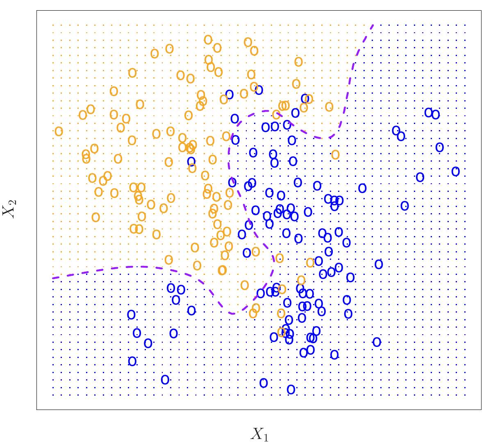

Assign \(x_0\) to the class \(j\) with the largest \[\Pr(Y = j \mid X = x_0)\]
Why can we never use this on real data?
Bayes decision boundary

ISLP Figure 2.13. One hundred observations in each of two classes. The purple dashed line is the Bayes decision boundary. The Bayes error rate is 0.133.
K-nearest neighbors
To classify \(x_0\), find the \(K\) closest training points and take a vote.